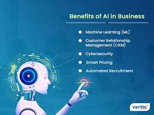
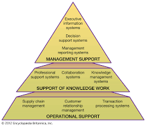

Introduction to AI in Business
Artificial Intelligence (AI) has become a transformative force in the business world, revolutionizing the way organizations operate, make decisions, and interact with data. AI technologies include machine learning, natural language processing, and computer vision, among others.
Role of AI in Business
1. Automation: AI enables the automation of repetitive tasks, increasing efficiency and allowing employees to focus on more strategic and creative aspects of their work.
2. Data Analysis: AI systems can analyze vast amounts of data, providing valuable insights for informed decision-making.
3. Customer Experience: AI is used to enhance customer interactions through chatbots, personalization, and predictive analytics.
Information Systems in Business
Information systems are integral to business operations, encompassing hardware, software, data, and processes. They support various functions, including transaction processing, decision support, and strategic planning.
Role of AI in Information Systems
AI plays a crucial role in enhancing information systems:
- Advanced Analytics: AI algorithms enable advanced data analytics, allowing businesses to derive meaningful insights from complex datasets.
- Decision Support: AI systems provide decision-makers with intelligent recommendations based on real-time data analysis, aiding in strategic decision-making.
- Process Optimization: Integration of AI with information systems automates processes, leading to increased efficiency and reduced operational costs.
Practical Applications and Future Trends
Practical applications of AI in information systems are diverse and continue to evolve. Some key areas include:
- Supply Chain Optimization: AI enhances supply chain management by predicting demand, optimizing inventory, and improving logistics.
- Cybersecurity: AI is utilized for threat detection, anomaly identification, and enhancing overall cybersecurity measures.
- Personalized Marketing: AI-powered systems analyze customer behavior to deliver personalized marketing campaigns and recommendations.
Future trends in AI and information systems include the increased adoption of AI in areas such as virtual assistants, edge computing, and the development of more advanced machine learning models.
Impact on Business Operations
The integration of AI and information systems has a profound impact on business operations:
- Efficiency Gains: Automation and optimization lead to increased operational efficiency, allowing organizations to accomplish more with fewer resources.
- Strategic Decision-Making: AI-driven insights empower decision-makers to make informed and strategic choices for the business.
- Competitive Advantage: Businesses leveraging AI and information systems gain a competitive edge through innovation and responsiveness to market dynamics.
AI and Information Systems in Business:
Benefits of AI in Business:

Infomration System in Business:
